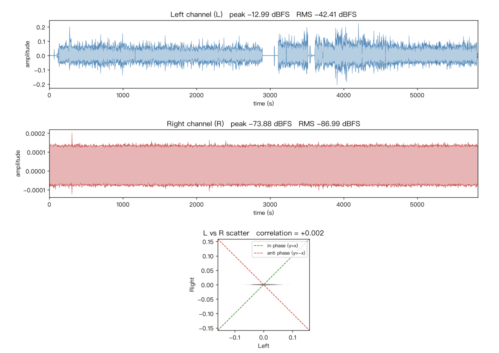
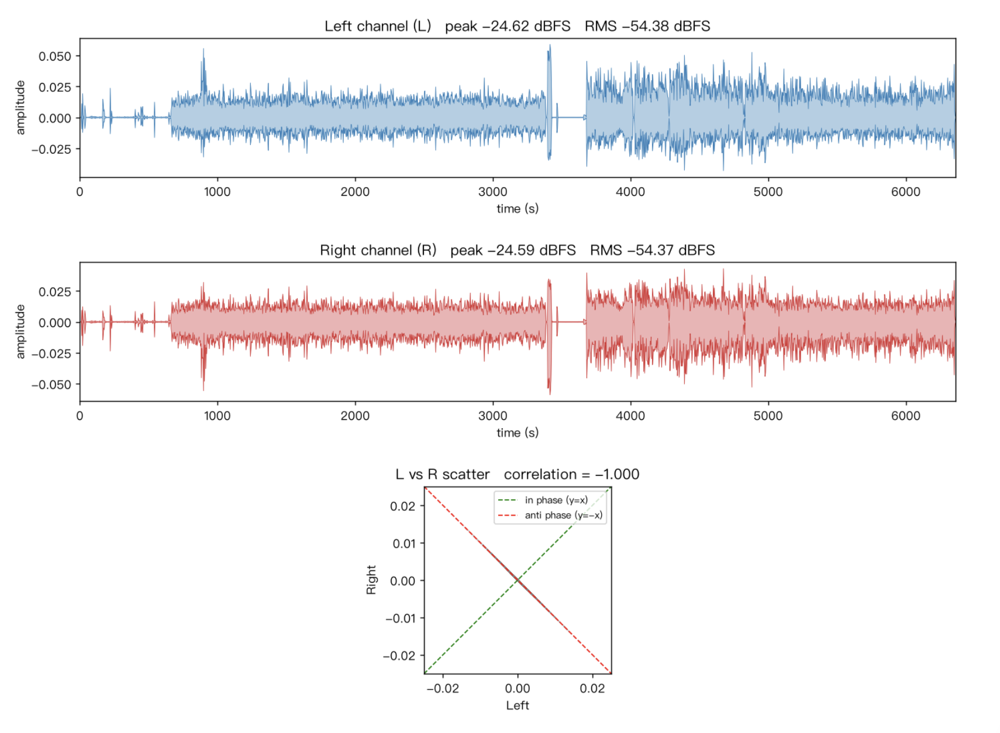

清华教室的音视频路由¶
背景¶
最近在设计上课所用设备的音视频路由，借此机会梳理一下教室里现有的音视频路由，并记录一种可行的方案。
教室环境¶
教室里原有的音视频路由大致如下。先看信号源：
- 一体机的视频和音频输出
- 通过 HDMI 接入的笔记本视频和音频输出
- 话筒的音频输出
- 教室里的摄像头，通常包括板书、近景、远景、学生视角等机位
这些信号经过一个可在讲台上操控的导播台（下称「讲台」，实际设备未必位于讲台内部），可以输出到以下位置：
- 教室的音响
- 投影、返显以及学生头顶的显示器
- 一体机的音视频输入
- 通过 USB 接入的笔记本音视频输入
画成路由图大致如下。视频部分：
flowchart TD
笔记本显示输出 -->|HDMI| 讲台1[讲台]
一体机显示输出 --> 讲台1
教室摄像头 --> 讲台1
教室摄像头 --> 讲台2[讲台]
讲台1 --> 投影
讲台1 --> 返显
讲台1 --> 显示器
讲台2 --> 一体机视频输入
讲台2 -->|USB| 笔记本视频输入音频部分：
flowchart TD
笔记本音频输出 -->|HDMI| 讲台
一体机音频输出 --> 讲台
话筒 --> 讲台
讲台 --> 音响
话筒 --> 讲台1[讲台]
讲台1 --> 一体机音频输入
讲台1 -->|USB| 笔记本音频输入针对上课需求的设计¶
回到我的课程。我希望能在多个信号源之间方便地切换，包括 Mac 笔记本、鸿蒙电脑以及一台便携摄像头。讲台自带的导播功能不足以支撑这么复杂的切换，手上又没有 ATEM Mini 导播台（怀念以前学生节的日子），于是打算在 Mac 笔记本上用 OBS 做软件导播。
那么音视频路由该如何设计？下面是我最终采用的路由方式。视频部分：
flowchart TD
鸿蒙电脑 -->|HDMI| 采集卡
采集卡 -->|Type-C| Mac电脑
便携摄像头 -->|USB| Mac电脑
Mac电脑 -->|HDMI| 讲台
Mac电脑 --> OBS直播或录像
教室摄像头 --> 讲台1[讲台]
讲台 --> 投影
讲台 --> 返显
讲台 --> 显示器
讲台1 -->|USB| Mac电脑音频部分：
flowchart TD
鸿蒙电脑 -->|HDMI| 采集卡
采集卡 -->|Type-C| Mac电脑
便携摄像头 -->|USB| Mac电脑
Mac电脑 -->|HDMI| 讲台
Mac电脑 --> OBS直播或录像
话筒 --> 讲台
话筒 --> 讲台1[讲台]
讲台 --> 音响
讲台1 -->|USB| Mac电脑这样，Mac 上的 OBS 就能获得来自鸿蒙电脑、Mac 自身屏幕、教室摄像头和话筒的音视频输入；再通过 OBS 的 Projector 把画面输出到扩展屏，经由讲台投到教室的各种投影和显示器上，音频则从音响放出来。之后要录像或直播，直接使用 OBS 自带的功能即可。
针对上课 4K 30 FPS 但是静态为主的场景，在 OBS 设置里，Output 选择 Simple，Video Bitrate 选 8000 Kbps，Video Encoder 选 Hardware (Apple, H.264)，下面 Recording Quality 选 Same as stream，Recording Format 选 Matroska Video (.mkv)。
可以打开 OBS 的 View -> Stats，看看实时码率，有没有 missed or skipped frame。
基于 HDMI 分配器的候选方案¶
另一个候选方案是使用 HDMI 分配器：把展示用的鸿蒙电脑信号一分为二，一份直连讲台投出，另一份经采集卡进入 Mac 电脑的 OBS。此时视频拓扑变为：
flowchart TD
鸿蒙电脑 -->|HDMI| 分配器[HDMI分配器]
分配器 -->|HDMI| 采集卡
采集卡 -->|Type-C| Mac电脑
便携摄像头 -->|USB| Mac电脑
分配器 -->|HDMI| 讲台
Mac电脑 --> OBS直播或录像
教室摄像头 --> 讲台1[讲台]
讲台 --> 投影
讲台 --> 返显
讲台 --> 显示器
讲台1 -->|USB| Mac电脑这种设计把 OBS 放到了旁路，避开了采集卡可能出现的一些问题（后文会提到）；缺点是投出来的内容只能来自鸿蒙电脑，无法通过 OBS 二次加工。
设备选型¶
采集卡用的是绿联的 UG307-95348 4K60Hz MS2130S 视频采集卡，USB 名称是 UGREEN 95348，VID 0x2b89，PID 0x5348。
便携摄像头用的是：
- 绿联 CM717-25442 2K USB 400W 像素摄像头，USB 名称是 UGREEN Camera 2K，VID 0x0c45，PID 0x636f；
- 绿联 CM831-65381 4K USB 800W 像素摄像头，USB 名称是 UGREEN Camera 4K，VID 0xeba4，PID 0x6579。
HDMI 分配器用的是绿联的 AP502-55493 4K60Hz 一进二出 HDMI 分配器，输入规格为 5V/1A，支持一路 HDMI 输入、两路 HDMI 输出。从 EDID 来看，采用的是 IT6664 方案，可以通过拨码开关切换不同的模式：
- 1 上 2 上（默认）：当两路输出都接上时，输入侧看到的 EDID 由两路输出的 EDID 共同决定，设备显示 ITE-6664；只接一路输出时，输入侧直接透传该路的 EDID
- 1 上 2 下：强制 1080P60Hz，设备显示 UGREEN-FHD
- 1 下 2 上：强制 4K60Hz，设备显示 UGREEN-UHD
- 1 下 2 下：复制 OUT1 设备的 EDID，如果没有 OUT1，则 fallback 到 1080P60Hz
仅供参考，不构成购买建议。
遇到的实际问题¶
在使用绿联 UG307-95348 采集卡的过程中，还遇到并修复了一些清晰度和颜色问题，具体方法见 修复绿联 UG307-95348 HDMI 采集卡清晰度与颜色问题。
在使用绿联 AP502-55493 HDMI 分配器的过程中，也遇到了一些显示问题：在特定教室里，在默认的 1 上 2 上配置（自动计算 EDID）下，两路输出只有一路可以正常显示，比如 OUT1 接教室的投影是正常的，OUT2 接采集卡就黑屏。调整成 1 下 2 下，即复制 OUT1 设备的 EDID，把 OUT1 接教室的投影，把 OUT2 接上面的采集卡，这两路又都能正常工作。初步怀疑和 EDID 有关系，后续考虑把两路输出的 EDID 导出来对比一下，也看看 HDMI 分配器给输入侧暴露的 EDID 是怎么样的。目前抓取了一下输出侧的 EDID，有问题的教室的投影，最高支持 4K 60Hz 4:4:4，而采集卡和没问题的教室的投影，最高只支持 4K 60Hz 4:2:0，怀疑和这个有关。
音频方面也踩到了一些坑，而且都和立体声有关。
第一个坑：某个教室录出来的音频虽然标称双声道，但实际上只有左声道有声音，右声道几乎静音。

第二个坑：另一个教室录出来的音频同样是双声道，但右声道是左声道的反相，两个声道一旦叠加就会互相抵消。

上面两张图都是用 stereo_check.py 绘制的。
此外，上课途中还遇到过突发情况：采集卡采集的视频出现闪屏和黑屏，不确定是采集卡的问题还是 HDMI 线的问题。下课后又无法复现，不知道是否和温度有关。
常用工具¶
ffmpeg 常用命令行：
# 截取视频中的一帧
ffmpeg -i source.mp4 -ss hh:mm:ss.xxx -frames:v 1 output.png
# 截取视频中的一部分，以左上角为坐标原点，x 轴向右，y 轴向下，从 (x,y) 到 (x+w, y+h)
# 用 https://ffmpeg.party/tools/cropper/ 辅助确定坐标
ffmpeg -i source.mp4 -vf "crop=w:h:x:y" output.mp4
# 原样保留视频
ffmpeg -i source.mp4 -c:v copy output.mp4
# 标准化视频中音频的响度
ffmpeg -i source.mp4 -af "loudnorm=I=-16:TP=-1.5:LRA=11" output.mp4
# 只保留双声道里的左声道
ffmpeg -i source.mp4 -af "pan=mono|c0=c0" output.mp4
# 只保留左声道的同时，标准化音频响度
ffmpeg -i source.mp4 -af "pan=mono|c0=c0,loudnorm=I=-16:dual_mono=true:TP=-1.5:LRA=11:print_format=summary" -ar 48k output.mp4
# 拼接两个输入视频，只保留左声道，标准化音频响度，重新用 libx264 CRF 22 编码
ffmpeg -i source1.mp4 -i source4.mp4 -filter_complex "[0:v:0][0:a:0][1:v:0][1:a:0]concat=n=2:v=1:a=1[outv][outa]; [outa]pan=mono|c0=c0,loudnorm=I=-16:dual_mono=true:TP=-1.5:LRA=11:print_format=summary[outa_final]" -map "[outv]" -map "[outa_final]" -c:v libx264 -preset slow -crf 22 -ar 48000 output.mp4
# 原样保留音频
ffmpeg -i source.mp4 -c:a copy output.mp4
# 测量前 10s 的音量大小
ffmpeg -i source.mp4 -af "volumedetect" -f null -t 10 -
LosslessCut：以关键帧的粒度，快速剪辑